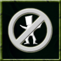

|
 |
Blood Oath Many monsters have deep seated enmities and blood feuds with other races. This ability channels that hatred to such an extreme that the monster gains bonuses while fighting that enemy. As the monster progresses further down the road of hatred, more enemies may be chosen to be on the end of the vendetta. Command: bloodoath <monster race> || human This ability is based on:
Effects of the blood oath ability:
|
Blood Oath | Creeping Crud | Fortitude | Venom